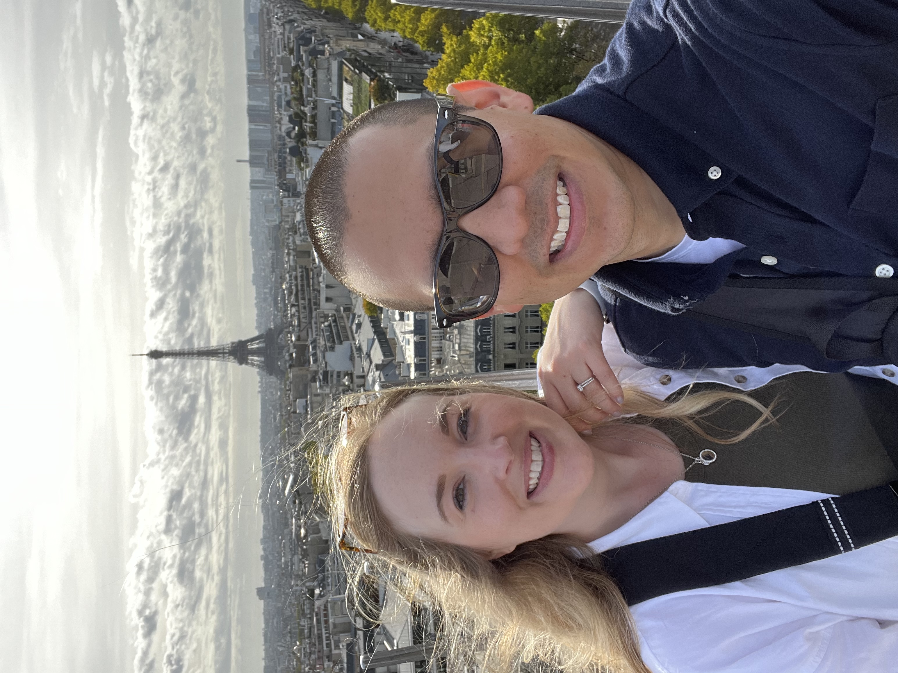
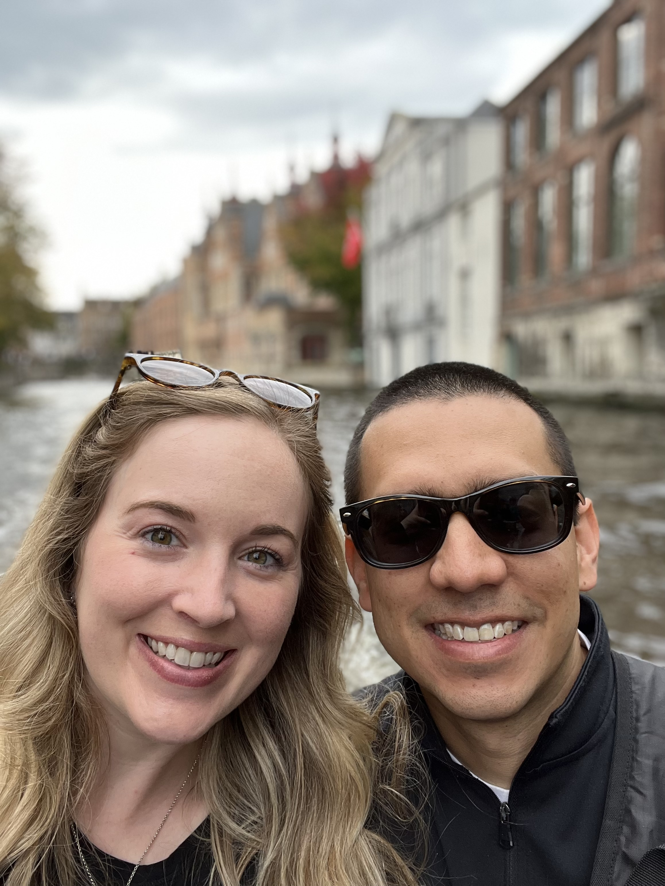
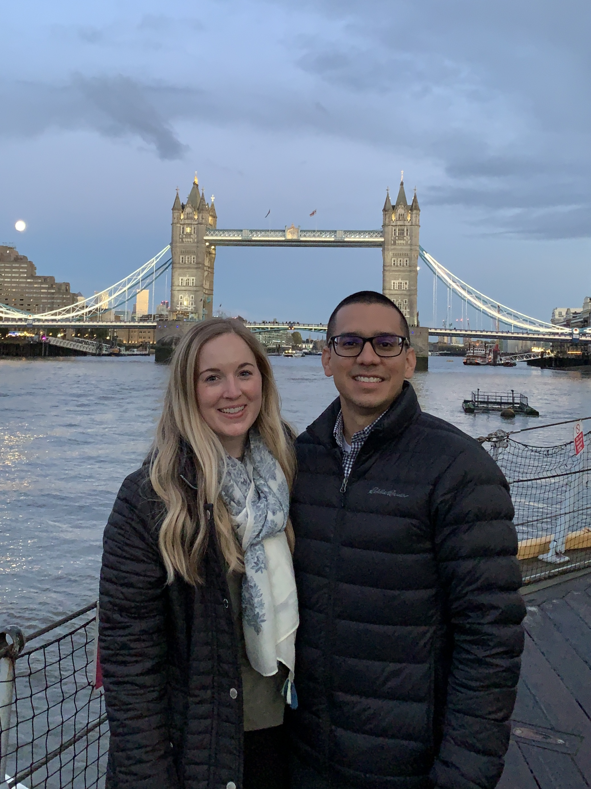
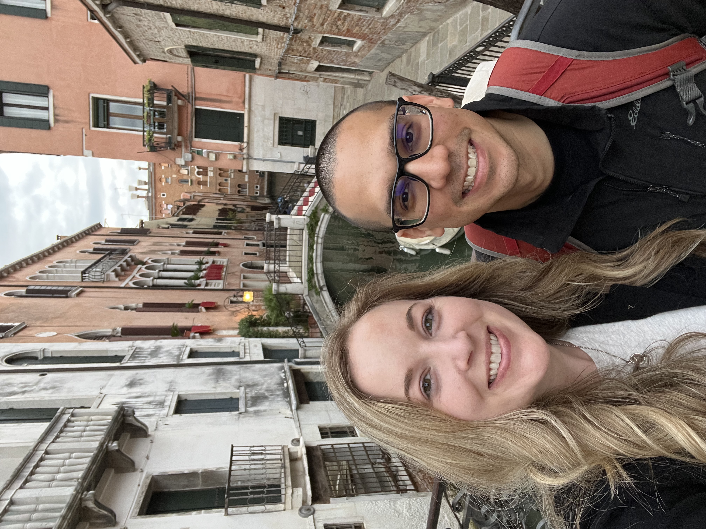

Trip LogVisited
France
Kicked off our first trip to Europe — a month long. Versailles and Disneyland Paris, checked off.
I bridge strategy and execution on mission-essential technology programs — 10+ years leading multidisciplinary teams from concept through deployment. This site is my working record, and the home base for @DRODHQ — field notes on systems thinking, applied to a life.
P1 · ABOUT.OUT
I've spent the last decade leading multidisciplinary teams across aerospace, defense, and software — moving between systems architecture, Model-Based Systems Engineering, and Agile project/product leadership to take mission-critical systems from concept through deployment.
What I care about most is the handoff between strategy and execution: taking a program's high-level intent and turning it into requirements, architecture, and building a team that can actually ship it. I'm at my best mentoring the engineers around me while staying close to the technical work myself.
Subsystem: Education
P2 · MISSION.SPEC
I'm building toward a career where technical depth and leadership aren't a trade-off — where I can stay close to the engineering while also shaping the strategy around it. Long-term, that means seeking out roles with real autonomy, systems that matter to the people who use them, and work that doesn't ask me to choose between doing and deciding.
// Marcus Aurelius, Meditations
"You have power over your mind — not outside events. Realize this, and you will find strength."
P3 · OFFCLOCK.LOG
Outside of work, you'll usually find me deep into some kind of project — planning our next trip, chasing FIRE-style retirement goals, tackling a DIY home project, or tinkering with the 3D printer. Lifelong soccer fan, on the pitch and off, and I keep something growing in the garden year-round. My wife and I are avid foodies — always hunting a new spot in St. Louis, never say no to afternoon tea, and we're season ticket holders for The Muny and the St. Louis Symphony.
Subsystem: Travel

Kicked off our first trip to Europe — a month long. Versailles and Disneyland Paris, checked off.

A vibrant, diverse, fun stop in Amsterdam. On the list for a longer, more dedicated trip.

Brussels was a stop, but Bruges took our hearts. A must-see, and on the list for a month-long stay once retired.

Oxford, Balmoral, Stonehenge — and so much of London left to see. We'll be back.

La dolce vita. Venice, Florence, Bologna, Naples, Sorrento, the Amalfi Coast, Rome — took months to come down from.

Clockwise from Dublin — Kilkenny, Cork, Killarney, Doolin, Clifden, Kylemore, Galway.
Subsystem: Hobbies
P4 · SYSTEMS-AND-STORIES.FEED
Field notes from a type-A engineer, applying the same instincts I use at work to the rest of life — and noticing where they help, and where they don't. Posted on Instagram as @DRODHQ.
I spent a week running scenario after scenario in a retirement modeling tool — bridge-fund math, Roth conversion timing, market-shock cases — trying to model my way to comfort. Two independent conversations with financial advisors later, I learned the thing that was keeping me up had almost nothing to do with the numbers.
View the full carousel on Instagram →Next logMore stories are posting on Instagram as they drop.
Follow @DRODHQ →P5 · CONTACT.IN
Open to conversations about systems engineering, leadership roles, collaborations, fractional opportunities, freelancing, or just talking shop.